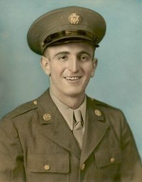
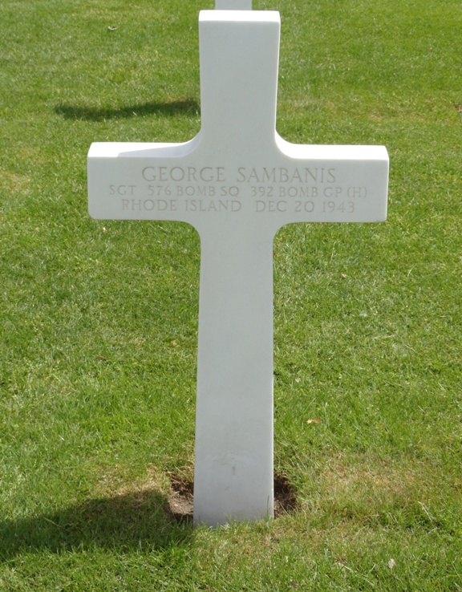

United States Army Air Forces — World War II

George Sambanis was born in Rhode Island in 1918, the son of a Greek immigrant who came to the United States seeking opportunity and freedom. Raised in Rhode Island, he represented the first generation of many immigrant families whose children would answer the nation's call during World War II.
Before entering military service, George worked as a metal worker and was part of the industrial workforce that helped support America's growing wartime production effort. Like many young men of his generation, he left civilian life behind after the United States entered the war.
On September 30, 1942, Sambanis enlisted in the United States Army Air Forces. After completing training, he was assigned to the 576th Bombardment Squadron, 392nd Bombardment Group (Heavy), serving as a tail gunner aboard the B-24 Liberator Sky Queen (Aircraft No. 42-7500).
As a tail gunner, Staff Sergeant Sambanis occupied one of the most dangerous positions aboard a heavy bomber. Stationed in the rear turret, he defended the aircraft and crew from attacks by German fighter aircraft during bombing missions over occupied Europe.
On December 20, 1943, the Sky Queen departed England on its ninth combat mission as part of a 392nd Bombardment Group attack against military and industrial targets in Bremen, Germany. The formation encountered intense anti-aircraft fire and repeated attacks by German fighter aircraft.
According to postwar crew statements, the bomber sustained numerous hits from both flak and enemy fighters. The damage became so severe that Pilot Second Lieutenant Henry C. LoPresto ordered the crew to abandon the aircraft at approximately 21,000 feet.
Several crew members successfully parachuted to safety and were captured as prisoners of war. Four members of the crew, however, were killed in action, including Staff Sergeant George Sambanis. The aircraft was lost northwest of Bremen after the crew abandoned the heavily damaged bomber.
George Sambanis was twenty-five years old when he gave his life in service to his country.

For his sacrifice, Staff Sergeant Sambanis was awarded the Purple Heart. He is buried at the Netherlands American Cemetery and Memorial in Margraten, Netherlands, Plot O, Row 20, Grave 1.
He is also commemorated by a cenotaph at North Burial Ground in Providence, Rhode Island. His service and sacrifice remain part of Barrington's history and a lasting reminder of the contribution made by Rhode Island's immigrant families during World War II.
Additional photographs, mission reports, military records, crew photographs, cemetery photographs, and other historical materials related to Staff Sergeant George Sambanis and the crew of the B-24 Sky Queen may be added to this archive as they become available.
```